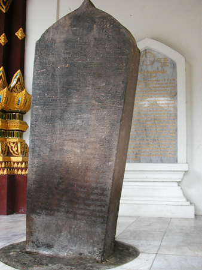
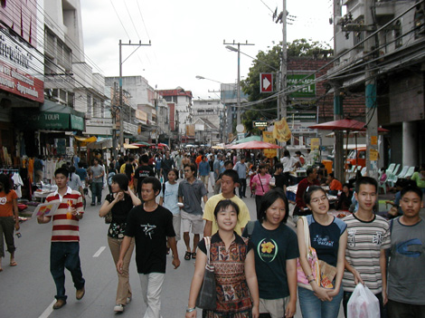

Thailand Trav-E-Logs©
| Chiang Mai
sent 23 September 2003 |
|
| back: Chiang Khong, Chiang Rai | ....two revered Buddha images + stone slab inscription.... |
================================= After Bangkok and the islands in the south, Chiang Mai in the north is the next major tourist destination for travelers to Thailand. And rightfully so, as it’s cooler than Bangkok, and though it’s 1/30 the size, has just as many temples. With 700 years of history, to visit the north is to see the roots of modern day Thailand. It has been raining several hours a day since entering Thailand from Laos, so probably should head down to Malaysia and Indonesia now, returning north later if time permits. =================================
June 29 – July 1, 2003
Arrived in Chiang Mai by bus from Chiang Rai armed with lots of information; my seatmate has spent the last 3 months in town, and was returning from a “visa run”. In Thailand, that means renewing your visa by crossing the border into another country long enough to get your passport stamped “departed”, and again “arrival” with another free 30-day visa. My stays are generally less than 30 days, but a traveler must always keep one eye on the calendar and mark his visa expiration date.
Chiang Mai has over 300 temples, so I picked out several with special significance for my visit. Wat Chiang Mun – founded in 1296, has two famous small Buddha images, one 30 cm high made from marble, reported to be from Sri Lanka, and over 2000 years old. The other is an 1800 year old, 10 cm high crystal seated Buddha that gained notoriety as a spoils of war, being shuttled back and forth to Laos. Tried to take decent pictures of them, but protective bars in front do not make for nice photos. The insert shows overall photo before enlargement. This Wat also has the oldest known stone inscription, dated 1581, giving the history of both the town and the Wat.

Wat Phra Singh was started in 1345, and has a large Buddha image identical to images in Nakhon Si Thammarat and Bangkok. Wat Chedi Luang (above left) is rather impressive as it has a mountain of a stupa in the middle of the courtyard, dating from 1441. It’s extensively damaged from cannon fire and a 16th century earthquake. Restoration was started, but not completed, as no one knows the original shape.
Spent Sunday biking, and afterwards, walking through the extensive weekend and night markets. Would you believe I didn’t buy a thing?
Enjoy!
Bill
------------------------------
Email me at the juno.com address "dancer2SEAsia"
"Travel is Fatal to Bigotry, Prejudice, and Narrow-minded ness" .... attributed to Mark Twain
| next: Sukhothai |
| back: Chiang Kong, Chiang Rai |